Районы · ЦАО
Куда сходить в центре Москвы
550 мест в центре Москвы: 185 ресторанов и кафе, 69 баров, 54 развлечения и 52 кофейни. Например, «Большой театр», «Красная площадь» и «Патриаршие пруды». 258 готовых планов начинаются здесь. Больше всего мест у станций «Китай-город», «Маяковская» и «Арбатская».
- 550 мест
- 258 планов
- 29 клубов
Места 40 из 521
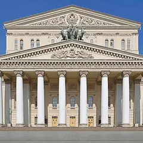
Театральная пл., 1
Главная сцена страны. Билеты продаются на сайте театра — следите за открытием продаж.
Подробнее и маршрут: Большой театрПозвать сюда: Большой театр
Фото: Юрий Д.К., CC BY 4.0 · Wikimedia Commons
Красная площадь
Главная площадь страны: Кремль, Василий Блаженный, ГУМ и Исторический музей в одном кадре.
Подробнее и маршрут: Красная площадьПозвать сюда: Красная площадь
Фото: mos.ru, CC BY 4.0 · Wikimedia Commons
Большой Патриарший пер.
Пруд из «Мастера и Маргариты»: скамейки, кафе вокруг, зимой — каток.
Подробнее и маршрут: Патриаршие прудыПозвать сюда: Патриаршие пруды
Фото: Dimа, CC BY-SA 3.0 · Wikimedia Commons
Чистопрудный бул.
Бульвар с прудом: летом лодки и лебеди, зимой каток. Рядом Меншикова башня.
Подробнее и маршрут: Чистые прудыПозвать сюда: Чистые пруды
Фото: Vasilii Martynov, CC BY-SA 4.0 · Wikimedia Commons
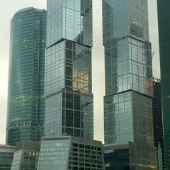
Пресненская наб., 8, стр. 1
Ресторан в Москва-Сити с панорамной террасой, зеленью и фонтанами.
Подробнее и маршрут: Bamboo.BarПозвать сюда: Bamboo.Bar
Фото: BpbAlonka, CC BY-SA 3.0 · Wikimedia Commons
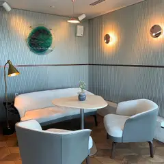
Страстной бул., 8А
Две звезды Michelin 2021
Фермерские продукты и вид на центр с седьмого этажа.
Подробнее и маршрут: Twins GardenПозвать сюда: Twins Garden
Фото: Tamara Ivanova-Issayeva, CC BY-SA 4.0 · Wikimedia Commons
Александровский сад
Сад вдоль Кремлёвской стены: Вечный огонь, Итальянский грот и смена почётного караула.
Подробнее и маршрут: Александровский садПозвать сюда: Александровский сад
Фото: Минеева Ю. (Julmin), CC BY-SA 1.0 · Wikimedia Commons
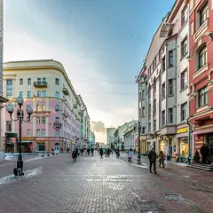
ул. Арбат
Старейшая пешеходная улица: уличные музыканты, художники, Стена Цоя и квартира Пушкина.
Подробнее и маршрут: АрбатПозвать сюда: Арбат
Фото: Alex 'Florstein' Fedorov, CC BY-SA 4.0 · Wikimedia Commons
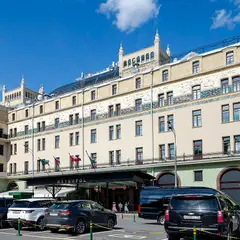
Театральный пр., 2
Новое
Парадный зал отеля «Метрополь» под витражным куполом с фонтаном. По воскресеньям с 13 до 17 — знаменитый бранч-буфет, в остальные дни утром завтраки. Для особого повода.
Подробнее и маршрут: МетропольПозвать сюда: Метрополь
Фото: Никонико962, CC BY-SA 4.0 · Wikimedia Commons
Большая Садовая ул., 10
«Нехорошая квартира» №50, где жил Булгаков. Вт–вс, по четвергам до 21:00.
Подробнее и маршрут: Музей БулгаковаПозвать сюда: Музей Булгакова
Фото: Usolt, CC BY 3.0 · Wikimedia Commons
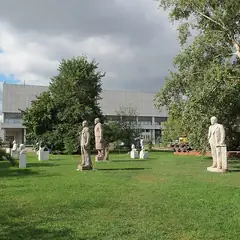
Крымский Вал, 2
Парк скульптур и прогулка по набережной Москвы-реки.
Подробнее и маршрут: МузеонПозвать сюда: Музеон
Фото: sailko, CC BY-SA 3.0 · Wikimedia Commons
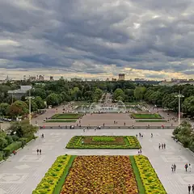
ул. Крымский Вал, 9
Главный парк города: набережная, Голицынский пруд, летние веранды, а зимой — большой каток.
Подробнее и маршрут: Парк ГорькогоПозвать сюда: Парк Горького
Фото: A.Savin, Free Art License · Wikimedia Commons
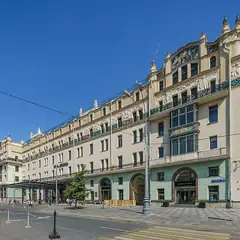
Театральный пр., 2
Звезда Michelin 2021
Современная русская кухня Андрея Шмакова в «Метрополе».
Подробнее и маршрут: СавваПозвать сюда: Савва
Фото: A.Savin, Free Art License · Wikimedia Commons
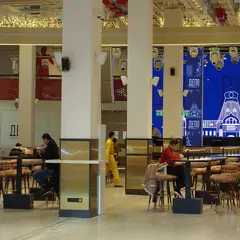
Новорязанская ул., 23, стр. 1
60 корнеров в бывшем троллейбусном депо и большая крыша-терраса. До 23, в пт–сб до 00.
Подробнее и маршрут: Три вокзала. ДепоПозвать сюда: Три вокзала. Депо
Фото: Svetlov Artem, CC BY 4.0 · Wikimedia Commons
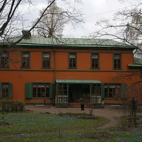
ул. Льва Толстого, 21
Деревянный дом, где Толстой жил зимами, и сад при нём.
Подробнее и маршрут: Усадьба Толстого в ХамовникахПозвать сюда: Усадьба Толстого в Хамовниках
Фото: A.Savin, CC BY-SA 3.0 · Wikimedia Commons
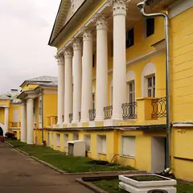
Поварская ул., 52/55, стр. 2
В гиде Michelin 2021
Премиальный итальянский ресторан Новикова в усадьбе Долгоруковых.
Подробнее и маршрут: Assunta MadreПозвать сюда: Assunta Madre
Фото: Stas Lobov, CC BY-SA 3.0 · Wikimedia Commons
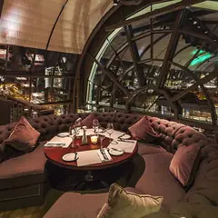
Смоленская пл., 3 (16 этаж)
Звезда Michelin 2021
Ресторан со звездой Michelin под стеклянным куполом с видом на центр. 12:00–00:00.
Подробнее и маршрут: White RabbitПозвать сюда: White Rabbit
Фото: Wikimaniawikimania, CC BY-SA 4.0 · Wikimedia Commons
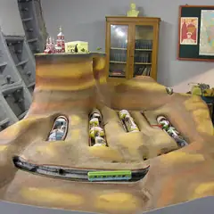
5-й Котельнический пер., 11
Секретный бункер холодной войны на глубине 65 метров у Таганки: экскурсии и ресторан.
Подробнее и маршрут: Бункер-42Позвать сюда: Бункер-42
Фото: Fastboy, CC BY-SA 3.0 · Wikimedia Commons
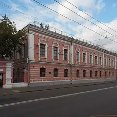
Старая Басманная ул., 15А, стр. 4
Антикварная галерея в особняке XVIII века на Басманной: джаз у винтажного рояля, кабаре и вечера по мотивам фильмов Дэвида Линча.
Подробнее и маршрут: Галерея «Другое дело»Позвать сюда: Галерея «Другое дело»
Фото: Svetlov Artem, CC BY-SA 4.0 · Wikimedia Commons
Гоголевский бул.
Тенистый бульвар от Арбатской площади к Храму Христа Спасителя.
Подробнее и маршрут: Гоголевский бульварПозвать сюда: Гоголевский бульвар
Фото: Panther, CC BY-SA 3.0 · Wikimedia Commons
ул. Пречистенка, 12/2
Главный пушкинский музей в усадьбе Хрущёвых на Пречистенке.
Подробнее и маршрут: Государственный музей ПушкинаПозвать сюда: Государственный музей Пушкина
Фото: NVO, CC BY-SA 2.5 · Wikimedia Commons
Болотная наб., 15
Бывшая электростанция напротив Кремля: выставки, кино и бар у входа. Вход бесплатный по регистрации на сайте, 11:00–22:00.
Подробнее и маршрут: ГЭС-2Позвать сюда: ГЭС-2
Фото: Юрий Д.К., CC BY 4.0 · Wikimedia Commons
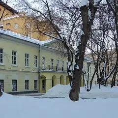
Никитский бул., 7А
Усадьба на Никитском бульваре, где Гоголь сжёг второй том «Мёртвых душ».
Подробнее и маршрут: Дом ГоголяПозвать сюда: Дом Гоголя
Фото: Shakko, CC BY-SA 4.0 · Wikimedia Commons
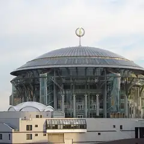
Космодамианская наб., 52, стр. 8
Концертный комплекс на Космодамианской набережной: классика, джаз и органные вечера.
Подробнее и маршрут: Дом музыкиПозвать сюда: Дом музыки
Фото: Nevermind2, общественное достояние · Wikimedia Commons
Моховая ул., 15/1, стр. 1
Иммерсивный ужин-шоу в «Национале»: каждая подача — часть спектакля.
Подробнее и маршрут: КалейдоскопПозвать сюда: Калейдоскоп
Фото: A.Savin, CC BY-SA 3.0 · Wikimedia Commons
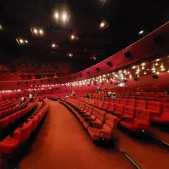
ул. Новый Арбат, 24
Новое
Кинотеатр 1967 года с огромной мозаикой на фасаде: 11 залов, зал IMAX и главный зал на 1500 мест, где проходил ММКФ. Последние сеансы — ближе к двум ночи.
Подробнее и маршрут: Каро 11 ОктябрьПозвать сюда: Каро 11 Октябрь
Фото: Svetlov Artem, CC BY-SA 4.0 · Wikimedia Commons
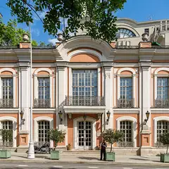
Тверской бул., 26А
Дворянская усадьба XIX века: библиотека, аптекарский зал и русская кухня. 10:00–23:00.
Подробнее и маршрут: Кафе «Пушкинъ»Позвать сюда: Кафе «Пушкинъ»
Фото: Mike1979 Russia, CC BY-SA 3.0 · Wikimedia Commons
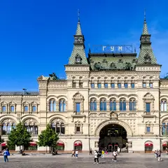
Красная пл., 3 (ГУМ, 3-я линия, 3-й этаж)
Новое
Маленький кинозал в ГУМе с лепниной, хрустальными люстрами и бархатными шторами. Премьеры, кино на языке оригинала и трансляции опер и спектаклей.
Подробнее и маршрут: Кинозал ГУМПозвать сюда: Кинозал ГУМ
Фото: Никонико962, CC BY-SA 4.0 · Wikimedia Commons
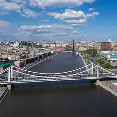
Крымский мост
Висячий мост между Парком Горького и Музеоном — особенно хорош на закате.
Подробнее и маршрут: Крымский мостПозвать сюда: Крымский мост
Фото: A.Savin, Free Art License · Wikimedia Commons
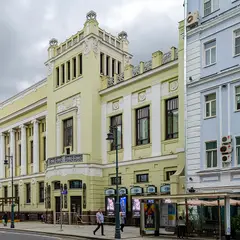
ул. Малая Дмитровка, 6
Новое
Театр в здании Купеческого клуба 1909 года. Здесь до сих пор идёт легендарная рок-опера «Юнона и Авось» — классика для романтичного вечера.
Подробнее и маршрут: Ленком Марка ЗахароваПозвать сюда: Ленком Марка Захарова
Фото: Никонико962, CC BY-SA 4.0 · Wikimedia Commons
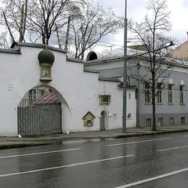
ул. Большая Ордынка, 34
Белоснежный храм Щусева и тихий сад на Большой Ордынке.
Подробнее и маршрут: Марфо-Мариинская обительПозвать сюда: Марфо-Мариинская обитель
Фото: NVO, CC BY 2.5 · Wikimedia Commons
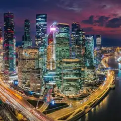
Пресненская наб., 8
Небоскрёбы на Пресненской набережной: смотровые, рестораны на высоте и прогулка по мосту «Багратион».
Подробнее и маршрут: Москва-СитиПозвать сюда: Москва-Сити
Фото: Igorkhait (cropped by Siktira), CC BY 4.0 · Wikimedia Commons
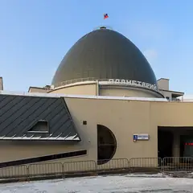
Садовая-Кудринская ул., 5, стр. 1
Звёздный зал под огромным куполом. Работает до 21:00, в выходные до 22:00.
Подробнее и маршрут: Московский планетарийПозвать сюда: Московский планетарий
Фото: A.Savin, Free Art License · Wikimedia Commons
ул. Кузнецкий Мост, 12
Больше 40 работающих автоматов из СССР: «Морской бой», «Городки», «Танкодром». Пятнашки — в билете. 11–21.
Подробнее и маршрут: Музей советских игровых автоматовПозвать сюда: Музей советских игровых автоматов
Фото: Hanno Böck, CC0 · Wikimedia Commons
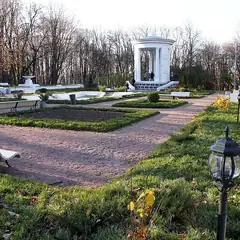
Пушкинская наб. (Парк Горького)
Тихая часть Парка Горького: старые деревья, овраги и набережная без толпы.
Подробнее и маршрут: Нескучный садПозвать сюда: Нескучный сад
Фото: Akkit, CC BY-SA 3.0 · Wikimedia Commons
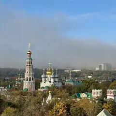
Новодевичий пр., 1
Ансамбль XVI–XVII веков над прудом — одна из самых красивых панорам Москвы.
Подробнее и маршрут: Новодевичий монастырьПозвать сюда: Новодевичий монастырь
Фото: Ivtorov, CC BY-SA 4.0 · Wikimedia Commons
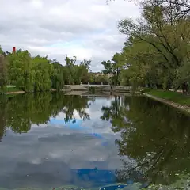
Новодевичий пр., Москва
Пруды у стен Новодевичьего монастыря — одна из самых красивых прогулок в Москве.
Подробнее и маршрут: Новодевичьи прудыПозвать сюда: Новодевичьи пруды
Фото: Uwe Brodrecht, CC BY-SA 2.0 · Wikimedia Commons
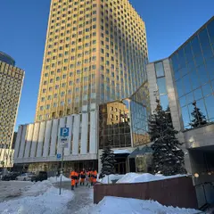
Смоленская ул., 5 (23-й этаж)
Новое
Ресторан на 23-м этаже отеля у Смоленской: за окнами высотка МИД, Арбат и огни Сити. Недёшево, но за вечерней Москвой сверху сюда и приходят.
Подробнее и маршрут: ПанорамаПозвать сюда: Панорама
Фото: Vlsr1, CC0 · Wikimedia Commons
ул. Варварка, 6
Парящий мост над Москвой-рекой и вид на Кремль. Сам парк открыт круглосуточно.
Подробнее и маршрут: Парк «Зарядье»Позвать сюда: Парк «Зарядье»
Фото: Alina Vozna, CC BY-SA 4.0 · Wikimedia Commons
Патриарший мост
Пешеходный мост от Храма Христа Спасителя к «Красному Октябрю» с открыточным видом на Кремль.
Подробнее и маршрут: Патриарший мостПозвать сюда: Патриарший мост
Фото: NVO, общественное достояние · Wikimedia Commons


Готовые планы 18 из 258
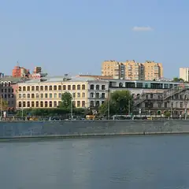
- Краснопресненские бани · Баня и хамам · м. Улица 1905 года
- 13 минут пешкомРаковарня · Раки и караоке
Финская сауна, хамам и бассейн в Краснопресненских банях, а потом через Трёхгорку в «Раковарню» — раки, морепродукты и караоке до шести утра.
Открыть план: Баня на Пресне и ракиПозвать сюда: Баня на Пресне и раки
Фото: Ludvig14, CC BY-SA 4.0 · Wikimedia Commons
- Смотровая iCITY · Бесплатная смотровая и коворкинг · м. Шелепиха
- 18 минут пешкомBamboo.Bar · Ресторан с террасой
Встретить закат на бесплатной круговой смотровой iCITY, а потом спуститься в квартал на террасу Bamboo.Bar с зеленью и фонтанами — удобно прямо после работы.
Открыть план: Бесплатная смотровая и терраса в СитиПозвать сюда: Бесплатная смотровая и терраса в Сити
Фото: BpbAlonka, CC BY-SA 3.0 · Wikimedia Commons
- Большой театр · Театр · м. Охотный ряд
- 4 минуты пешкомМетрополь · Ресторан в историческом отеле
Спектакль на главной сцене страны, а через Театральную площадь — ужин в парадном зале «Метрополя» под витражным куполом с фонтаном.
Открыть план: Большой театр и ужин под куполомПозвать сюда: Большой театр и ужин под куполом
Фото: Юрий Д.К., CC BY 4.0 · Wikimedia Commons
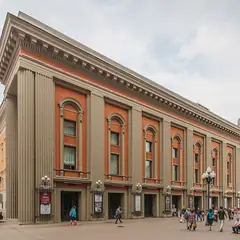
- Театр Вахтангова · Театр · м. Смоленская
- 15 минут пешкомПанорама · Панорамный ресторан
Спектакль в Театре Вахтангова на Арбате, потом минут пятнадцать пешком до Смоленской — и ужин на 23-м этаже, где за окнами высотка МИД и огни Сити.
Открыть план: Вахтангов и ужин на 23-м этажеПозвать сюда: Вахтангов и ужин на 23-м этаже
Фото: A.Savin, Free Art License · Wikimedia Commons
- Красная площадь · Площадь · м. Площадь Революции
- 9 минут пешкомМетрополь · Ресторан в историческом отеле
Прогулка по Красной площади, а с 13 до 17 по воскресеньям — знаменитый бранч-буфет «Метрополя» под витражным куполом с фонтаном.
Открыть план: Воскресный бранч в «Метрополе»Позвать сюда: Воскресный бранч в «Метрополе»
Фото: mos.ru, CC BY 4.0 · Wikimedia Commons
- ГЭС-2 · Дом культуры · м. Кропоткинская
- 4 минуты пешкомKaraoke Pro · Караоке-клуб
Бесплатные выставки ГЭС-2, а потом через дорогу Karaoke Pro: акустика Nexo, барабаны и бэк-вокал, в пятницу — живая группа. Открыто с четверга по субботу с 20:00.
Открыть план: ГЭС-2 и караоке с живой группойПозвать сюда: ГЭС-2 и караоке с живой группой
Фото: Юрий Д.К., CC BY 4.0 · Wikimedia Commons
- Кинозал ГУМ · Кинотеатр · м. Площадь Революции
- 7 минут пешкомВокруг Света · Гастромаркет
Фильм в маленьком зале ГУМа с лепниной и бархатными шторами, а потом гастромаркет «Вокруг Света» на Никольской: десятки кухонь, а в пятницу и субботу — до 5 утра.
Открыть план: Кино в ГУМе и ночной гастромаркетПозвать сюда: Кино в ГУМе и ночной гастромаркет
Фото: Никонико962, CC BY-SA 4.0 · Wikimedia Commons
- Московская консерватория · Концертный зал · м. Охотный ряд
- 1 минута пешкомMamie · Бистро
Классика в Большом или Малом зале консерватории — бывают недорогие билеты на балкон, — а через дорогу Mamie, светлое бистро в духе французского дома на юге.
Открыть план: Консерватория и французское бистроПозвать сюда: Консерватория и французское бистро
Фото: A.Savin, Free Art License · Wikimedia Commons
- Дом музыки · Концертный зал · м. Павелецкая
- 2 минуты пешкомCity Space · Панорамный бар
Классика, джаз или орган в Доме музыки, а потом лифт на 34-й этаж соседнего отеля: круглый бар City Space смотрит на реку на все 360°. Столы у окна не бронируют — идите сразу после концерта.
Открыть план: Концерт и бар на 34-м этажеПозвать сюда: Концерт и бар на 34-м этаже
Фото: Nevermind2, общественное достояние · Wikimedia Commons
- Красная площадь · Площадь · м. Площадь Революции
- 3 минуты пешкомBosco Cafe · Кафе с видом на Кремль
Красная площадь утром, пока нет толп и очередей, а с 9 часов — завтрак в Bosco Cafe в ГУМе, где окна смотрят прямо на Кремль.
Открыть план: Красная площадь до толп и завтракПозвать сюда: Красная площадь до толп и завтрак
Фото: mos.ru, CC BY 4.0 · Wikimedia Commons
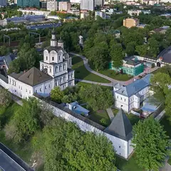
- Андроников монастырь · Музей и монастырь · м. Площадь Ильича
- 6 минут пешкомСекрет · Приватный кинотеатр
Прогулка вокруг белых стен Андроникова монастыря, а потом приватный кинотеатр «Секрет»: свой зал с большим диваном, любой фильм и работа до шести утра.
Открыть план: Монастырь и кинозал только для васПозвать сюда: Монастырь и кинозал только для вас
Фото: A.Savin, Free Art License · Wikimedia Commons
- Парк Горького · Парк · м. Октябрьская
- 15 минут пешкомСтарлайт Дайнер · Американский дайнер
Вечерняя прогулка по набережной Парка Горького, а потом бургеры или завтрак среди ночи в круглосуточном «Старлайт Дайнере» у «Октябрьской».
Открыть план: Ночная набережная и дайнер 24/7Позвать сюда: Ночная набережная и дайнер 24/7
Фото: A.Savin, Free Art License · Wikimedia Commons
- Каро 11 Октябрь · Кинотеатр · IMAX · м. Смоленская
- 4 минуты пешкомSoprano · Караоке-бар
Поздний сеанс в «Октябре» — последние начинаются ближе к двум ночи, — а в паре минут караоке Soprano с кожаными диванами, где поют до 5 утра.
Открыть план: Ночной сеанс и караоке на Новом АрбатеПозвать сюда: Ночной сеанс и караоке на Новом Арбате
Фото: Svetlov Artem, CC BY-SA 4.0 · Wikimedia Commons
- Sky Padel · Падел · м. Выставочная
- 4 минуты пешкомBamboo.Bar · Ресторан с террасой
Корт на четверых под стеклянным куполом «Афимолла» — играешь в окружении башен Сити, а потом ужин на террасе Bamboo.Bar прямо в квартале.
Открыть план: Падел среди небоскрёбовПозвать сюда: Падел среди небоскрёбов
Фото: BpbAlonka, CC BY-SA 3.0 · Wikimedia Commons
- Патриарший мост · Пешеходный мост · м. Кропоткинская
- 1 минута пешкомLui · Ресторан с видом на реку
Закат на Патриаршем мосту с видом на Кремль, а на другом берегу, у «Красного Октября», — ужин в Lui, откуда за рекой виден храм Христа Спасителя.
Открыть план: Патриарший мост и ужин у рекиПозвать сюда: Патриарший мост и ужин у реки
Фото: NVO, общественное достояние · Wikimedia Commons
- Патриаршие пруды · Пруд и сквер · м. Маяковская
- 1 минута пешкомКиану · Коктейльный бар
Вечерний круг вокруг Патриарших прудов, а потом маленький бар «Киану», из окна которого видно пруд: коктейли, роллы и диджей до 6 утра.
Открыть план: Патрики и бар с видом на прудПозвать сюда: Патрики и бар с видом на пруд
Фото: Dimа, CC BY-SA 3.0 · Wikimedia Commons
- Московский планетарий · Планетарий · м. Баррикадная
- 11 минут пешкомShort talk · Кафе
Звёздное небо под огромным куполом планетария, а потом кафе Short talk: кофе, настольная игра и негромкая музыка выручат, если разговор сначала не клеится.
Открыть план: Планетарий и настолкиПозвать сюда: Планетарий и настолки
Фото: A.Savin, Free Art License · Wikimedia Commons
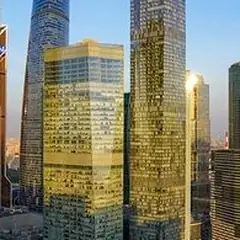
- Le Mans · Картинг · м. Шелепиха
- 8 минут пешкомСмотровая iCITY · Бесплатная смотровая и коворкинг
- 10 минут пешкомRUSKI · Ресторан на 85-м этаже
Десятиминутный заезд по 650-метровой трассе Le Mans у «Шелепихи», потом бесплатная смотровая iCITY и ужин на 85-м этаже башни «ОКО» в RUSKI.
Открыть план: После работы: картинг и 85-й этажПозвать сюда: После работы: картинг и 85-й этаж
Фото: mos.ru, CC BY 4.0 · Wikimedia Commons

Компьютерные клубы 10 из 29
Садовая-Кудринская ул., 3А
Круглосуточно
Клуб на Садовом: отдельная комната-буткемп на компанию и лаунж с четырьмя PS5. Работает круглосуточно.
Долгоруковская ул., 40 (цокольный этаж)
Круглосуточно
Премиальный кибер-лаундж: топовое железо, VIP-комнаты, работает круглосуточно. Вход рядом с Cinnabon.
Театральный пр., 5/1 (ЦДМ)
Круглосуточно
Киберспортивная арена на 1000+ м² в Детском мире: общий зал, буткемпы, сцена для турниров и консольная зона. Круглосуточно.
Подробнее и маршрут: WINSTRIKE ArenaПозвать сюда: WINSTRIKE Arena
Нижегородская ул., 2, корп. 1
Круглосуточно
Клуб сети КиберPride на Нижегородской улице, минут десять пешком от «Пролетарской». Работает круглосуточно.
Подробнее и маршрут: КиберPride НижегородскаяПозвать сюда: КиберPride Нижегородская
Тверская ул., 30/2, стр. 1 (2 этаж)
Круглосуточно
Рядом с «Маяковской». Около 40 ПК в нескольких зонах (Premium на 16 ПК, буткемп на 6 ПК), мониторы до 540 Гц, клубные аккаунты. От 139 ₽/час. Круглосуточно.
Подробнее и маршрут: Центр Киберспорта МаяковскаяПозвать сюда: Центр Киберспорта Маяковская
Мукомольный пр., 2
Круглосуточно
54 ПК, общий зал и приватные комнаты, «Супер ВИП» на 7800X3D и RTX 5070 Ti. Работает круглосуточно.
Подробнее и маршрут: Центр Киберспорта Москва-СитиПозвать сюда: Центр Киберспорта Москва-Сити
Климентовский пер., 6 (цокольный этаж)
Круглосуточно
150 м от метро. Мониторы 540 Гц и OLED 2K 360 Гц, более 500 клубных аккаунтов. Работает круглосуточно.
Подробнее и маршрут: Центр Киберспорта НовокузнецкаяПозвать сюда: Центр Киберспорта Новокузнецкая
Новослободская ул., 10, стр. 2
Круглосуточно
Клуб сети «Центр Киберспорта» в нескольких минутах пешком от «Новослободской» и «Менделеевской». Работает круглосуточно.
Подробнее и маршрут: Центр Киберспорта НовослободскаяПозвать сюда: Центр Киберспорта Новослободская
Серебрянический пер., 12, стр. 1 (1 этаж)
Круглосуточно
Киберотель без общего зала: приватные комнаты на одного, пару или компанию, около 63 ПК (до RTX 5080, мониторы до 360 Гц), ресторан, бар и номера на ночь. Круглосуточно.
Подробнее и маршрут: Avulus Cyber SpaceПозвать сюда: Avulus Cyber Space
Малая Почтовая ул., 5/12, стр. 2
Круглосуточно
Около 0,4 км от Бауманской. Общий зал на RTX 3060, зона Solo на RTX 4070 Ti, буткемпы, мониторы 165–280 Гц, 3 PS5. Работает круглосуточно.
Подробнее и маршрут: Colizeum БауманкаПозвать сюда: Colizeum Бауманка
Как позвать
- Выбери план, место или событие — в карточке адрес, цены и маршрут в Яндекс Картах.
- Нажми «Позвать сюда» — соберётся приглашение-игра для свидания или голосование для компании.
- Отправь ссылку в любой мессенджер: тебе ответят, а компания отметит, куда и когда может. Бесплатно и без регистрации.